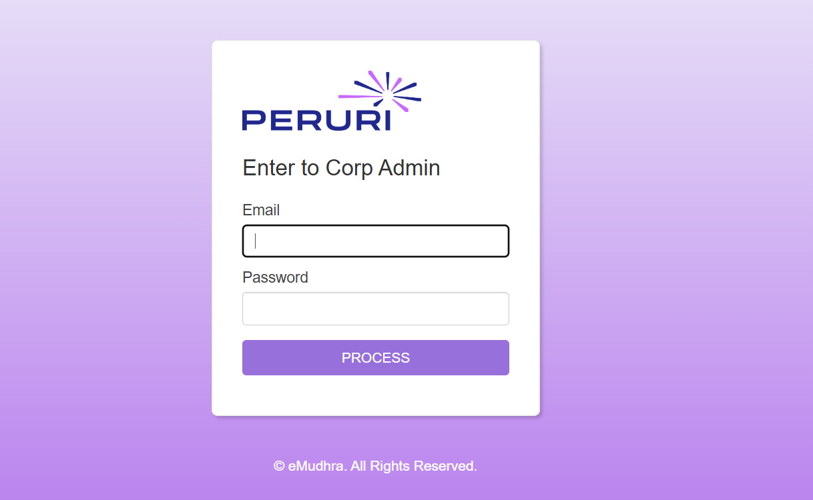

üíª Technical Projects
ü§ñ KYC System - eMudhra

KYC Systems simplifies KYC verification by utilizing Aadhaar, DigiLocker, and PAN for Indian users, and Veridas and eID for global users.
üîê Peruri Corp Admin Portal - eMudhra
Led development of a secure corporate admin registration and approval portal for Peruri, the official KYC Certifying Authority serving the Indonesian government. Built the full stack—including frontend, backend, UI design, and database management—using MySQL to store and handle all verification data. The portal streamlines multi-level verification with document uploads, video verification, and approval workflows to ensure compliance and authenticity for corporate registrations. Implemented detailed document review with approval/rejection options and remarks, along with management of partner channel information and purchase order uploads to support government regulatory requirements.
ü§ñ Desktop Robot - PES University Capstone
A cost-effective desktop robot that navigates obstacles and avoids edges using ROS, Arduino, and AI-based vision.
üì¶ Courier Management System - PES University Minors Degree
Automates package tracking, delivery management, and user accounts for a streamlined courier service.